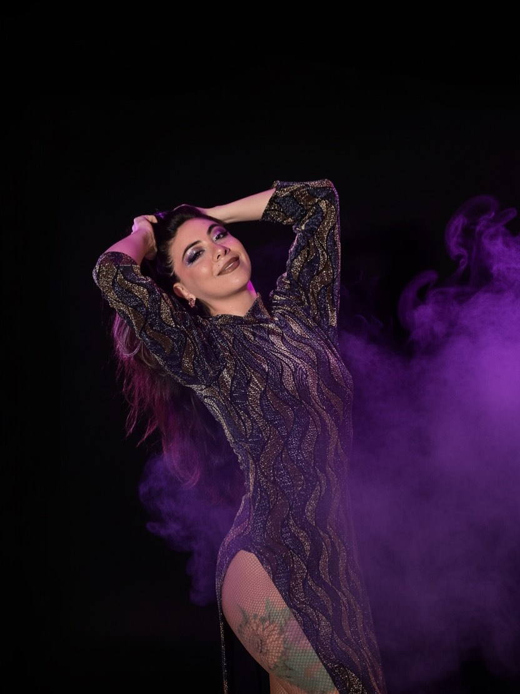
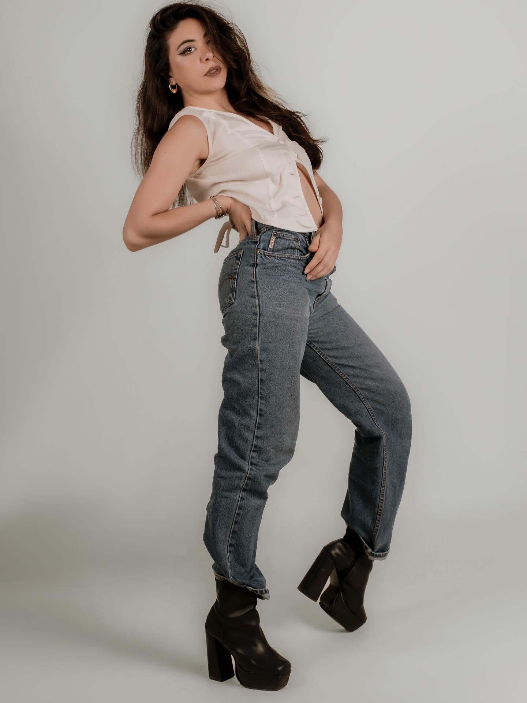
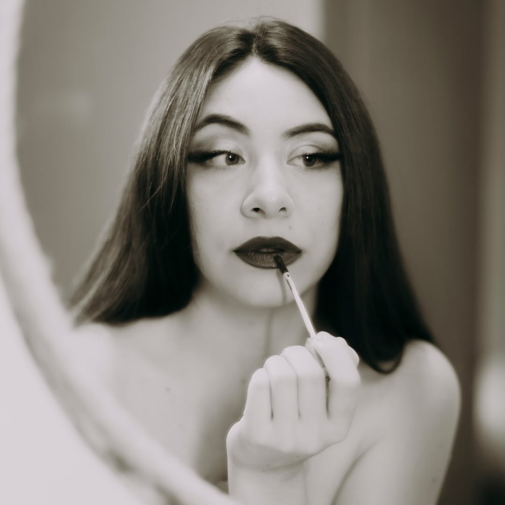
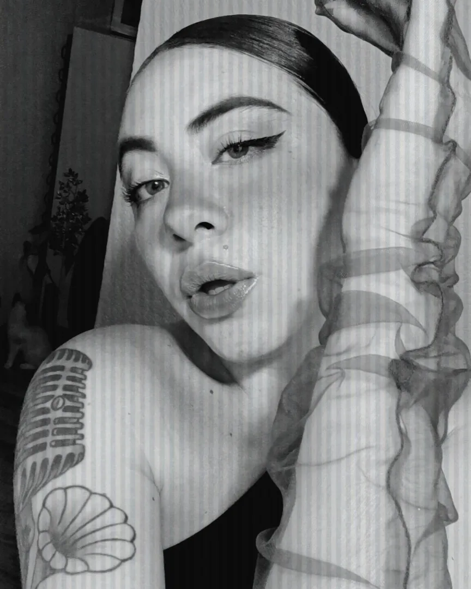
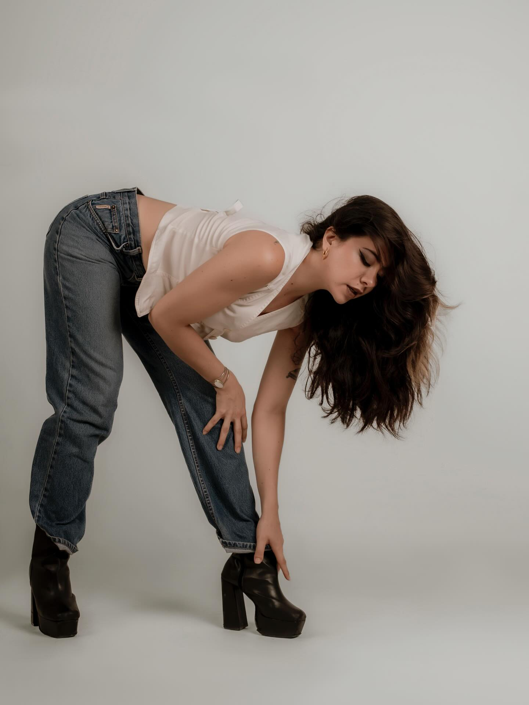

Diagnóstico estratégico · Instagram público
@hopepaoo bajo la lupa.
La evidencia apunta a una identidad de cantante y performer con tres activos reconocibles: escena, voz e imagen editorial. Este análisis separa señales observables de hipótesis y elimina afirmaciones que el scraping no pudo confirmar.

28posts propios analizados
La muestra
Una lectura útil, no una auditoría total.
Hallazgos
Lo que ya funciona y merece sistema.
El retrato editorial genera conversación.
Las tres publicaciones con más interacción total incluyen imagen cuidada; dos acreditan a @pamelaberlanga. Las preguntas sencillas (“¿Cuál es su favorita?”) elevan comentarios.
El video amplía alcance.
Los 8 videos promedian 4,231 reproducciones. Los covers de Whitney Houston y Mayan Band encabezan plays, confirmando que la voz es un activo de descubrimiento.
La escena ya aporta prueba.
Chic Cabaret, Cherry Dream Show y referencias a Cancún sitúan el trabajo en un contexto real. Conviene ordenarlo como portafolio, no dejarlo disperso en el feed.
La narrativa es singular, pero no siempre convierte.
Jaguar, eclipse, renacimiento, cuerpo y arquetipos crean una voz propia. Falta conectar esa atmósfera con una acción clara: booking, colaboración o próxima fecha.
Evidencia visual
Una identidad que ya se reconoce antes de leerla.




Contenido
Dos formatos, dos funciones.
18 carruseles8 videos2 imágenes
| Pieza | Formato | Likes | Comentarios | Plays | Lectura |
|---|---|---|---|---|---|
| A beautiful day to be a woman ↗ | Carrusel | 213 | 25 | — | Mayor interacción total |
| Sesión editorial ↗ | Carrusel | 168 | 31 | — | Mayor conversación |
| ¿Cuál es su favorita? ↗ | Carrusel | 172 | 21 | — | CTA de bajo esfuerzo |
| Whitney Houston cover ↗ | Video | 137 | 14 | 5,896 | Mayor alcance en video |
| Mayan Band cover ↗ | Video | 106 | 26 | 5,522 | Voz + relato personal |
Posicionamiento
De feed personal a portafolio vivo.
Paola Elizabeth — voz, escena y metamorfosis.
Una artista de Cancún que combina performance vocal, lenguaje de cabaret y una dirección visual simbólica.
Tres territorios memorables.
Escena para prueba de experiencia; Voz para alcance y contratación; Imagen para diferenciación y colaboración creativa.
Plan 30–60–90
Convertir identidad en oportunidad.
Ordenar
- Definir bio con rol, ciudad y CTA.
- Crear highlights: Shows, Voz, Press, Booking.
- Validar canal de contacto y disponibilidad.
Publicar
- Alternar carrusel editorial y video vocal.
- Incluir créditos, venue y objetivo en cada pieza.
- Repetir preguntas específicas que inviten a comentar.
Convertir
- Crear reel/showreel de 45–60 segundos.
- Publicar fechas confirmadas y dossier.
- Medir clics, consultas y contrataciones, no solo likes.
Qué no afirmar todavía
- Seguidores, seguidos o bio actual: la ficha de perfil no estuvo disponible.
- Servicios terapéuticos o credenciales profesionales: no se verificaron en la muestra.
- Precios, paquetes, testimonios o resultados de clientes: no hay fuente pública suficiente.
- Email, WhatsApp, agenda o disponibilidad: requieren confirmación directa de Paola.
Metodología
Trazabilidad antes que adorno.
Se solicitaron 30 resultados al Actor oficial apify/instagram-scraper. El dataset devolvió 30; se filtraron 28 cuyo ownerUsername coincide con hopepaoo y se excluyeron dos piezas de otros autores. Los promedios se calcularon sobre esas 28 publicaciones.
Los Actors de perfil dedicado y detalles generales terminaron con cero items. Por eso el análisis no utiliza seguidores, seguidos, bio, categoría o datos de contacto. El archivo limpio está guardado en data/2026-08-05_hopepaoo-instagram-analysis.json.